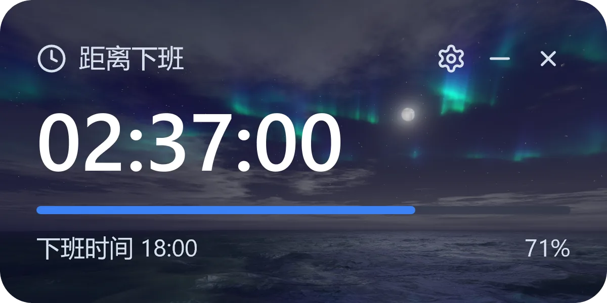
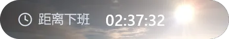
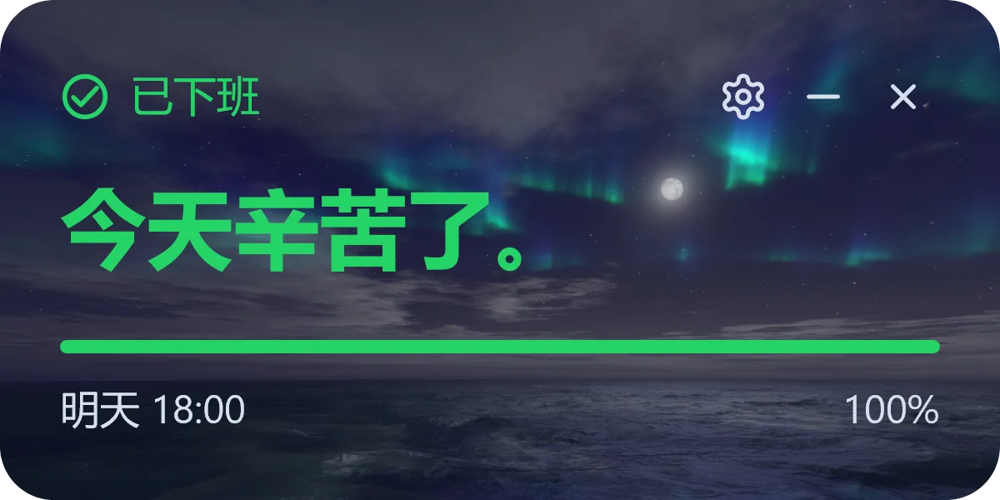
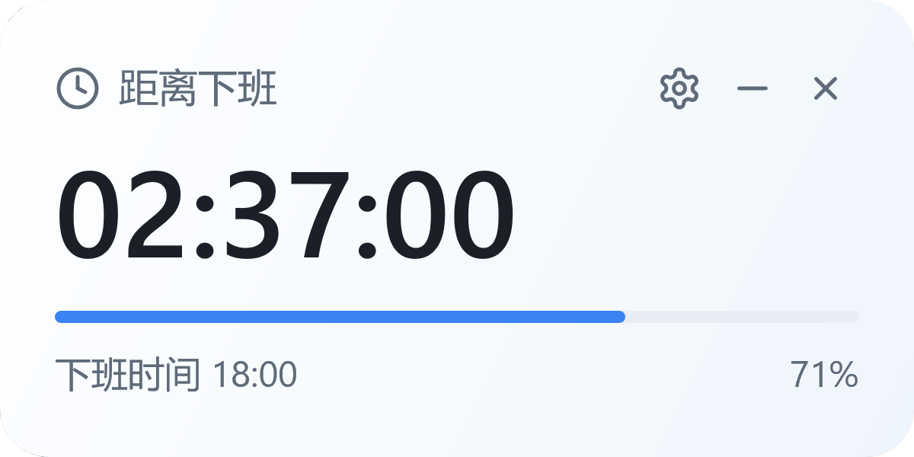
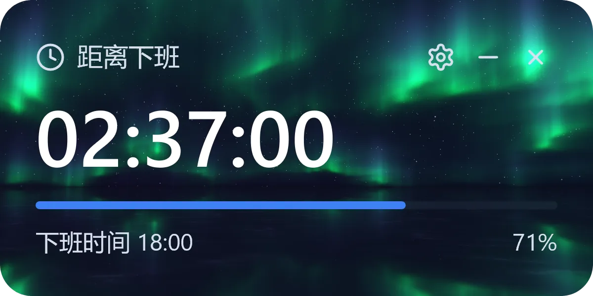

三个状态



四个背景


带走一张小卡片。
单文件，下载后双击就能用。默认上班 09:00，下班 18:00。
下载 Windows 版
由 Cloudflare 加速，国内外都可访问；文件与 GitHub Release 相同。
- 免安装
- 约 1.3 MB
- 不联网
- 开源
账号
安装
联网
推送
查看 SHA256 校验值
e270b31d7cf51a38506e93d0fee02582fc86d4249910f98ff09fb902f4667506
还有一些小问题。
没有隐藏的条款，也没有需要注册的东西。
需要安装吗？
不需要。下载一个 exe，双击打开。设置只存在本机，删掉文件就干净了。
支持哪些 Windows？
Windows 10 和 Windows 11，64 位。更老的系统没有测试过。
为什么会有 SmartScreen 提示？
程序没有代码签名。点「更多信息」再点「仍要运行」即可。完整源码在 GitHub，也可以自己构建。
会上传我的数据吗？
不会。程序没有联网功能，设置只存在本机。
怎么改上下班时间？
点卡片右上角的齿轮，用加减号调整。设置保存在 %APPDATA%\OffWorkCountdown\schedule.txt。
卡片会挡住屏幕内容吗？
卡片可以隐藏在屏幕边框外，鼠标移入再显示。